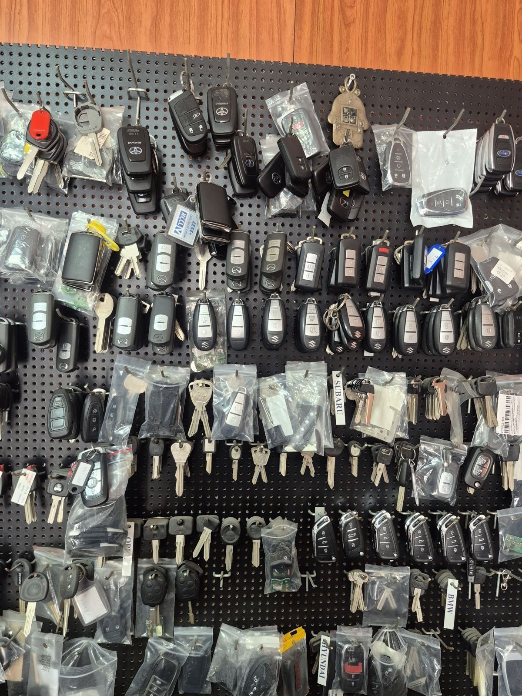
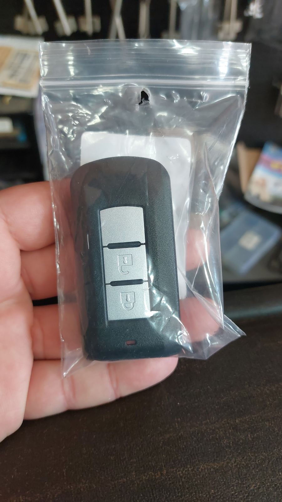
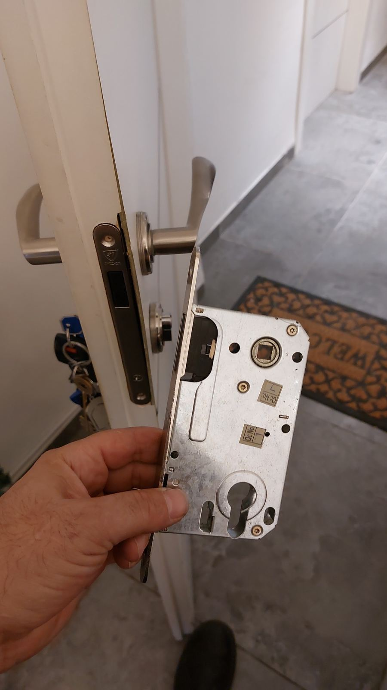
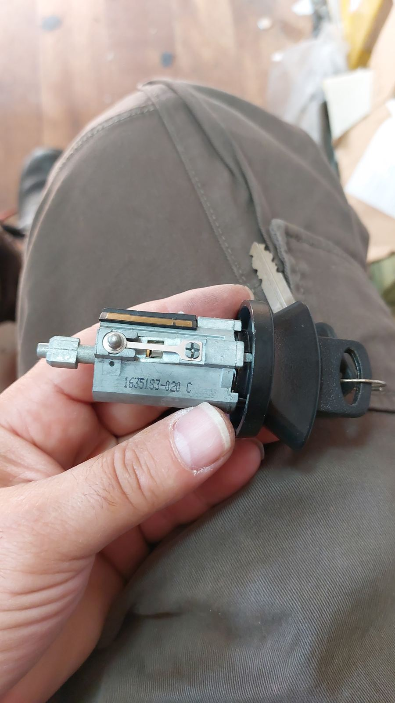
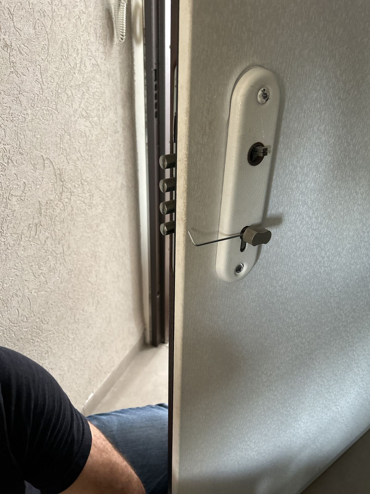

אפריםEfraim המנעולןthe locksmith


מפתחות לרכב, קידוד, שלטים וצילינדרים.Car keys, coding, remotes and cylinders.
יוסף לוי 25, קריית ביאליק · בקריות ובחיפה25 Yosef Levi St, Kiryat Bialik · Krayot & Haifa
מפתח מקור, מפתח חדשThe original, and its copy
המקור יושב במכונה, והלהב החדש נחתך לפיו, חריץ אחר חריץ.The original sits in the machine; the new blade is cut to match it, notch by notch.
״נעזרתי בו כבר פעמיים לשכפול מפתחות לרכבים שונים״“I’ve already used him twice to copy keys for different cars” (translated from Hebrew)
נוי פפר · Google
צילינדר מבפניםInside a cylinder
חמישה פינים, קפיצים, וקו אחד שכולם צריכים לפגוש.Five pins, springs, and one line they all have to meet.

מפתח לרכב, מקודדCar keys, coded
שכפול, קידוד ושלטים, גם למפתחות חכמים.Copies, coding and remotes, smart keys too.
שכפולCopy
הלהב נחתך לפי המקור.The blade is cut from the original.
קידודCoding
השבב במפתח נרשם ברכב.The key’s chip is registered to the car.
שלטRemote
השלט מחובר לרכב.The remote is paired with the car.
״טיפל לי בשכפול מפתח לפיג׳ו 5008.״“He copied a key for my Peugeot 5008.” (translated from Hebrew)
רן בר-לב · Google
על הלוחOn the board
מה אפרים עושה, מהרכב ועד הדלת.What Efraim does, from the car to the front door.

ביקורות בגוגל · דירוג 5.0Google reviews · rated 5.0
- פתיחת דלתותOpening doors
- החלפת מנעוליםLock replacement
- צילינדריםCylinders
- מערכות נעילהLocking systems
קידוד שלט למחסום חשמלי.Remote coding for an electric barrier.
החלפת שלטים לרכב.Car remote replacement.

מהשטחFrom the field
״אפרים בנאדם מקצועי אבל קודם כל בנאדם. איש מקצוע מסור ואחראי החליף מהר צילינדר , עובד נקי, גם מפגין ידע רב בהחלפת שלטים לרכב , שנה שעברה גם הגיע לבצע קידוד למחסום החשמלי. אפילו צילינדר מאתגר וקשה להחלפה לבסוף הצליח !
בקיצור איש אשכולות והכי חשוב אמינות מעל הכל.״“Efraim is a professional, but first of all a mensch. A dedicated, responsible tradesman: he replaced a cylinder quickly, works clean, and knows a lot about replacing car remotes. Last year he also came to code our electric barrier. Even a tricky cylinder that was hard to replace, he got it in the end! In short, a man of many skills, and most important, reliable above all.” (translated from Hebrew)
תג למפתחA tag for your key
מה צריך? הפרטים יגיעו לאפרים בוואטסאפ.What do you need? It goes to Efraim on WhatsApp.
לאפרים · וואטסאפTo Efraim · WhatsApp
שאלותQuestions
מה אפרים עושה לרכב?What does Efraim do for cars?
שכפול מפתחות, קידוד מפתחות, שלטים, מפתחות חכמים ומתגי הצתה.Key copies, key coding, remotes, smart keys and ignition switches.
ומה בבית או בעסק?And at home or at work?
החלפת צילינדרים ומנעולים, פתיחת דלתות ומערכות נעילה.Cylinder and lock replacement, opening doors, and locking systems.
גם שלט למחסום חשמלי?Remotes for an electric barrier too?
כן, אפרים מקודד גם שלטים למחסומים חשמליים.Yes, Efraim codes remotes for electric barriers too.
איפה ומתי?Where and when?
יוסף לוי 25, קריית ביאליק. א׳–ה׳ 8:00–17:30, ו׳ 8:00–12:30, שבת סגור. בקריות ובחיפה.25 Yosef Levi St, Kiryat Bialik. Sun–Thu 8:00–17:30, Fri 8:00–12:30, closed Saturday. Across the Krayot and Haifa.
יוסף לוי 2525 Yosef Levi
קריית ביאליק · בקריות ובחיפהKiryat Bialik · the Krayot and Haifa